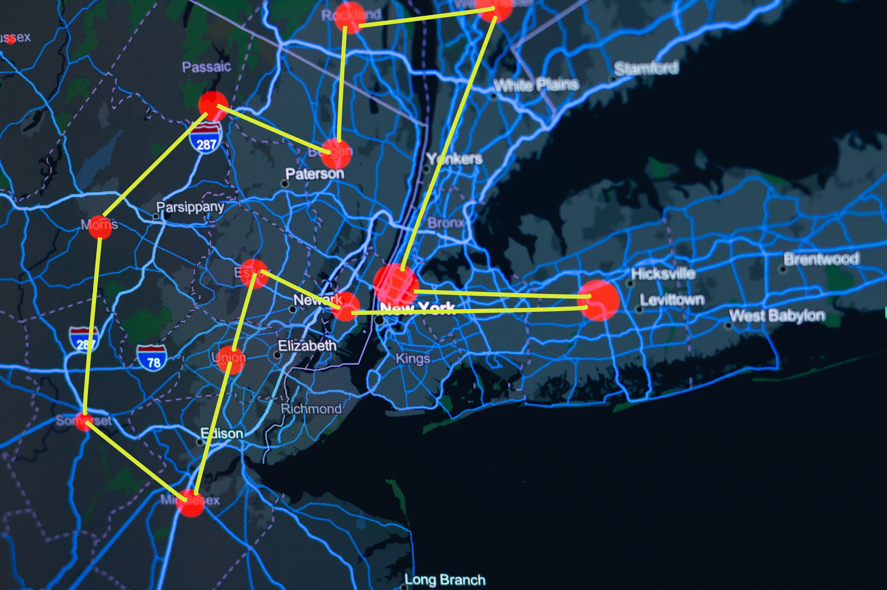
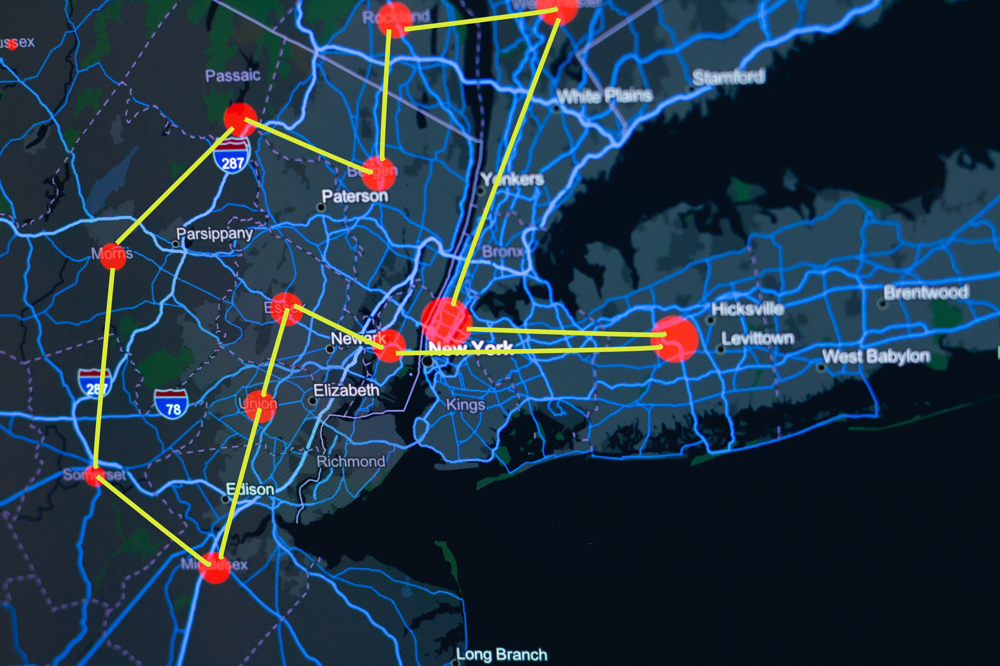

I am a Data Science Enthusiast with MSc in Data Science.
I worked as a freelancer or contractor Data Scientist with various companies.
I’m passionate about AI research especially in Machine Learning and Neural Networks.
As someone who loves to study
I did side projects about areas that I interested in and shared some of them on my GitHub page.
In here I summarized these projects, and if you are
interested you can follow the GitHub link to replicate it.
In this webpage you will find some my projects that completed and/or still continue doing
in my free time and also here is a poster that I presented in an event which summarizes one of my completed Data Science project with a company.
 

This project is about to writting and algorithm with Python to solve classic travelling salesman problem.
The code outputs an interactive Python GUI map with Tkinder to show the coordinates of the best route.
The purpose of this project is, solving complex problems with Python 3 programming language,
implementing Python GUI (Graphical User Interface) programming with Tkinder package,
writing tests (used pytest) and Test-Driven-Development (TDD) and considering different search algorithms and data structures.
In this project, I aimed to decrease the dimension of the dataset, by applying Principal Component Analysis (PCA) technique.
I used just the most important 3 features to apply PCA in the dataset instead of using the whole dataset.
Then I applied dimensionality reduction technique, PCA, on the important features.
The code in Github will output all the graphs that supports the univariate, bivariate and mutlivariate analysis.
As a result, PCA can successfully reduce the dimension of these 3 important
features while the first and the second eigenvectors cover %98 of the variability of the data in total.